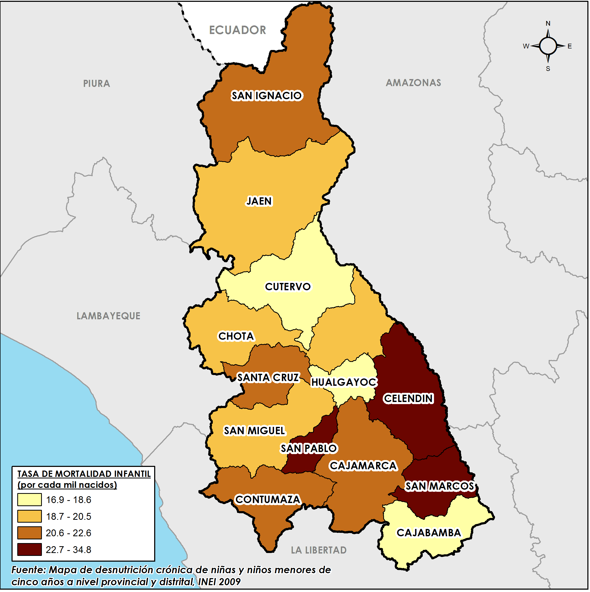

HISTORIA
Cajamarca fue habitada por pueblos anteriores a los incas, que organizaron una gran cultura, lo que puede apreciarse en los sitios arqueológicos de los alrededores y las muestras de arte rupestre que se pueden encontrar en diferentes sectores. Su importancia histórica comienza en 1532, donde el inca Atahualpa es capturado y luego ejecutado por Francisco Pizarro y los conquistadores españoles. Fue la primera ciudad en Perú donde se comenzó la fabricación de monedas que fueron enviadas a España. En 1821 se declaró la independencia de Perú y Cajamarca se convirtió en una de las ciudades más importantes del norte peruano.
ESCUDO

GOBERNADOR REGIONAL
Mesias Antonio Guevara Amasifuen

MAPA DEL DEPARTAMENTO
 mapa del año 2010PROVINCIAS DE CAJAMARCA
-
lAS PROVINCIAS SON:
- La convención
-
LOS DISTRITOS SON:
- prueba 1
- prueba 2
-
provincias
- LA CONVENCIÓN
- calca